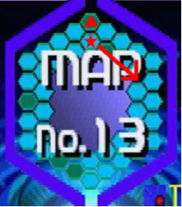

マップセレクト
5つの領域から3つ組み合わせた「マップ」が全42通り存在し、その内1つを選択して攻略します。この組み合わせは、以下の様なルールが存在します。
一度のプレイで、同じ領域が複数回出る事もありません。
初回プレイはマップがランダムで選択されますが、次回以降は下記のルールで進行していきます1。
- 開始時に「Previous(前回のマップ)」「New」から選択します。
- 「New」は、未解放マップからランダムです。
- もし1面に指定した事の無い領域があれば、そのマップが優先されます2。
- 全てのマップをプレイすると、リザルト画面で特別なメッセージが出ます。そして次回以降、任意のマップを選べます。
PS版では上記のルールが撤廃され、単純に通りとなりました。全ての組み合わせをマップ一覧にまとめています。
「どのマップが楽なの?」という点は、攻略のまとめをご覧ください。
小ネタ：リザルト画面で点滅するヘックス
スタート地点(★)から、時計回りにNo.0,1,・・・と進みます。No.18～41は、外周スタート地点(▲)から同様に進みます。
「水色：未攻略」「点滅：今回攻略」「深緑：攻略済み」です。PS版追加パターンの場合は、何も起こらない様です。

1. 公式サイトいわく「Ground-Part-Arrangement」だそうです ↩
2. 例えば記憶領域を1面に選んだ事が無い場合、そこから始まるマップがセレクトされる様になっています ↩